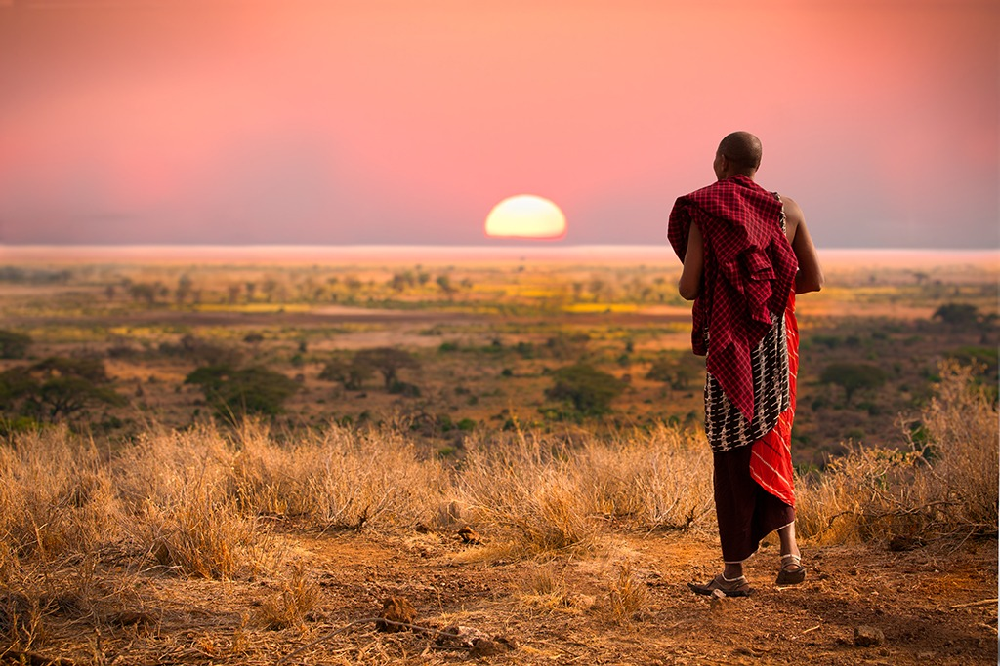
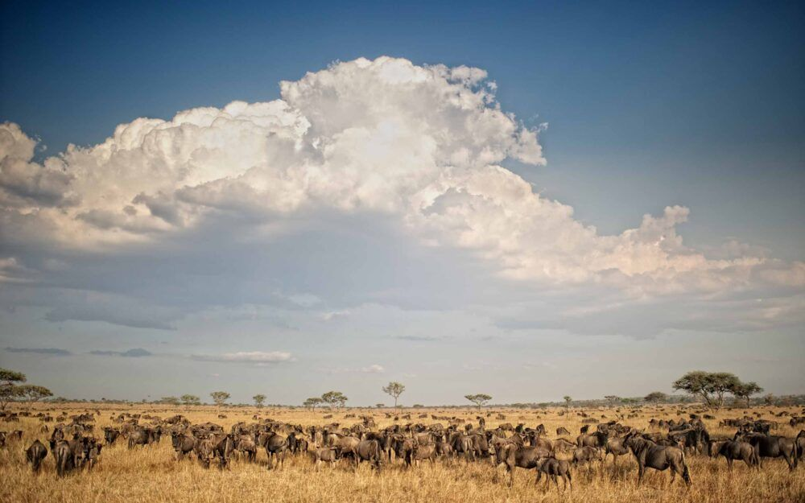
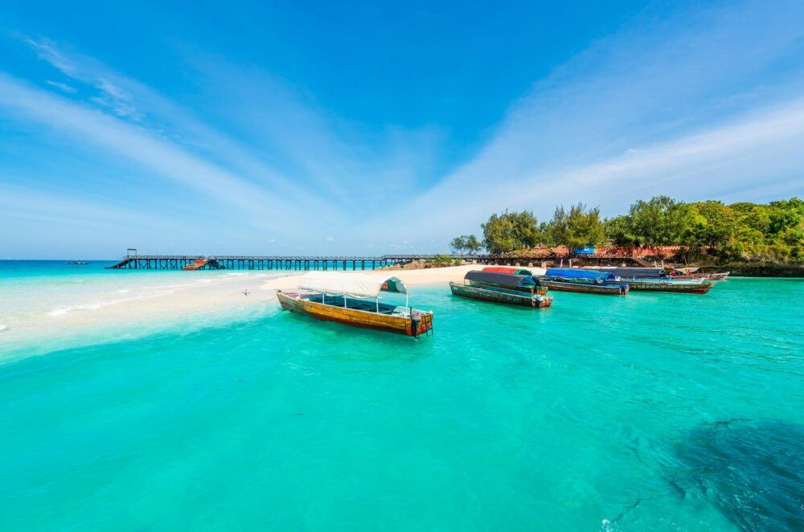
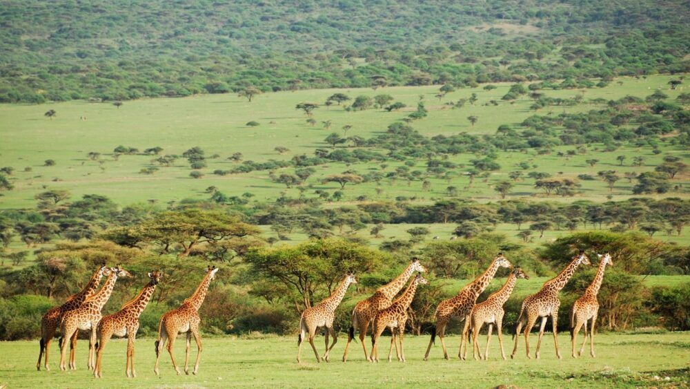

Informacion sobre el pais Tanzania:
- Tanzania es el hogar de muchas especies de fauna salvaje, pero también fue la primera morada del hombre. Los investigadores Mary y Louis Leakey encontraron fósiles del Homo habilis en el país en los años 60 del siglo pasado.
- Aunque la lengua oficial de Tanzania es el Swahili, seguida por el inglés, lo cierto es que en el país africano se hablan más de 120 idiomas o dialectos, muchos de los cuales tienen una raíz común en el bantú. En todo caso, seguro que escucharemos muchos acentos distintos durante la estancia.
- En Tanzania hay una especie de cangrejo gigante que alcanza los cuatro kilos de peso y que es capaz de levantar hasta casi treinta kilos con sus pinzas. No son agresivos, pero pueden llevarse tranquilamente nuestra mochila si nos despistamos.
- En el país abunda el árbol Mpingo, también conocido como “árbol negro”. Tiene fama de ser una de las maderas más caras que se puedan encontrar, gracias a propiedades como la densidad, que lo convierten en ideal para fabricar instrumentos musicales, y a que resulta muy difícil hacerlo arder.
- Se dice que la luna de Tanzania brilla con más intensidad que en otras partes del mundo, probablemente por la situación del país en la tierra y por la escasísima contaminación lumínica. La luna llena es ideal para realizar un safari nocturno o para una cita romántica.
- El Kilimanjaro es la montaña aislada más alta del mundo, además de la cima de África, pero cuando uno se acerca, descubre que en realidad no se trata del cono de un solo volcán, sino de tres. Por suerte, lleva inactivo 200 años.
Sitios de interes en Tanzania
Fundada en 1964 a partir de dos estados-nación separados, Tanzania es el hogar del Kilimanjaro, la montaña más alta de África, y es uno de los destinos de safaris más populares de África. El país también tiene docenas de hermosas playas de arena blanca como las que se encuentran en la isla de Zanzíbar. Aquí están algunas de las atracciones turísticas más inolvidables en Tanzania:
Parque Nacional del Serengeti.
El Parque Nacional del Serengeti es uno de los destinos de safaris de caza mayor más conocidos de África y una de las atracciones turísticas más populares de Tanzania. Es famoso por su migración anual de fauna silvestre de ñus y cebras. Una de las mejores épocas para visitar el parque es en mayo, cuando la hierba se seca y se agota, y los ñus y las cebras comienzan a reunirse en grandes ejércitos para ofrecer un espectáculo espectacular de vida silvestre.

Monte Kilimanjaro.
El Monte Kilimanjaro es un volcán inactivo en el noreste de Tanzania, cerca de la frontera con Kenia. A 5.892 metros (19.331 pies) sobre el nivel del mar, el Kilimanjaro es el pico más alto de África y la montaña independiente más alta del mundo. Aunque está situado cerca del ecuador, el Monte Kilimanjaro es famoso por su cumbre nevada que se asoma sobre las llanuras de la sabana. La montaña se ha convertido en una importante atracción turística para montañeros y excursionistas de todo el mundo.

Zanzíbar.
La isla de Unguja, parte de Zanzíbar, constituye la última isla de las especias. Una vez parte del Imperio Británico, hoy Zanzíbar es una región semiautónoma de Tanzania. La isla africana ha sido durante siglos un importante centro comercial, un crisol de influencias africanas, indias y árabes. La mayor atracción turística de Zanzíbar es Stone Town, con sus casas de trapos de coral encalados. Otro gran atractivo son sus hermosas playas de arena blanca.

Reserva de Caza Selous.
Los animales de la sabana se pueden encontrar en esta reserva en mayor número que en cualquier otra reserva de caza africana, gracias a la estricta regulación de la División de Vida Silvestre del Ministerio de Recursos Naturales y Turismo de Tanzania. La mayoría de los visitantes llegan en avión, y se permiten excursiones a pie o por el río, aunque no se permiten viviendas humanas ni estructuras permanentes.

Historia de Tanzania
La famosa Garganta de Olduvai, en el norte de Tanganica ha aportado interesantes pruebas sobre la prehistoria en la zona, incluyendo restos fósiles de algunos de los ancestros más tempranos de la Humanidad. Los descubrimientos sugieren que el África Oriental podría haber sido el lugar en el que apareció el ser humano.
Se sabe poco de la historia de la Tanganica interior durante los sglos pasados. Se cree que la zona fue habitada por grupos étnicos que hablaban lenguas con sonidos similares a las de los bosquimanos y los hotentotes del sur de África. Aunque todavía quedan restos de esas primeras tribus, la mayor parte fueron desplazados por agricultores bantúes que migraron hacia el oeste y el sur y por nilotas y otros pueblos relacionados del norte. Algunos de estos grupos formaron sociedades bien organizadas y controlaban extensas áreas hasta el momento en el que los mercaderes árabes, los exploradores europeos y los misioneros penetraron en el interior en la primera mitad del siglo XIX.
La zona costera fue la primera en sentir el impacto de la influencia exterior, al comienzo de nuestra era. Rhapta, el mercado más meridional de Azania, era conocido por los mercaderes del periodo del imperio romano.
Después, los mercaderes árabes establecieron puestos comerciales en la costa. Quizá ya en el siglo VIII. En el siglo XII, los mercaderes y los inmigrantes llegaron tan lejos como desde Persia (actual Irán) y la India. Los nativos construyeron unas series de ciudades y estados comerciales a lo largo de la costa, siendo la más importante de ellas Kibaha, un asentamiento que existió hasta que los portugueses lo destruyeron a principios del siglo XVI.
El navegante portugués Vasco da Gama exploró la costa del África Oriental en 1498, durante su viaje a la India. En 1506, los portugueses reivindicaron el control de toda la costa. Este control, sin embargo, fue nominal ya que ni colonizaron el área ni exploraron su interior. Ayudados por los árabes omaníes, los moradores indígenas de la costa tuvieron éxito en mantener a los portugueses fuera de la zona al norte del río Ruvuma. El sultán omaní Sultan Seyyid Said (l804-56) trasladó su capital a Zanzíbar en 1841 para reclamar el territorio costero.
Cultura de Tanzania
Un país increíble Tanzania se caracteriza por estar formado por diferentes tribus que cuentan con tradiciones propias aportando una gran riqueza a la cultura del país.
Tanto la tribu bantú, como las de origen europeo y asiáticas sumadas a las tribus árabes han logrado integrarse culturalmente y esto se puede ver por ejemplo en el idioma donde la lengua swahili es la principal, a pesar que también se habla inglés y árabe y al norte de Tanazania donde se encuentran las tribus “bantú” la lengua tradicional es el nilótico.
La música y el baile son parte fundamental de esta cultura y sobre todo la música de Tanzania que ha llegado a ser popular en gran parte de África.
Por otra parte se puede evidenciar en las poblaciones de las islas de Zanzíbar y Pemba las mezclas de culturas con influencias árabes.
A diferencia de otros países africanos en Tanzania se profesa el cristianismo, islamismo e hinduismo. Sin embargo, la mayor parte de los musulmanes se encuentran en las islas y a lo largo de la costa. También existen tribus como los masái que profesan su propia religión venerando a su dios llamado Engai.
Ritmos vigorosos caracterizan los bailes tanzanos y su música se ha diseminado a través de bandas musicales dominando así el mercado artístico de África Oriental.
Una antigua tradición poética y musical llamada “taraab” se destaca en la Isla de Zanzíbar, cuyo estilo se hizo popular a través del trabajo de Siti Bint Saad primera cantante de origen africano que grabara sus canciones en 1928.